Interview
1. 基础知识
预处理: .c –> .i #include 头文件内容插入、#define 宏展开、处理条件编译 #ifdef、#ifndef、#endif 等、删除注释
编译： .i –> .s 转汇编语言
汇编：.s –> .o 转机器语言（二进制）
链接：生成可执行文件。静态链接 动态链接
OSI七层模型
1 | ┌─────────────────────────────────────────────────────┐ |
UART/232/485
全双工并行 TTL电平 / 232电平转换芯片 /485差分信号转换芯片
IIC
半双工 串行 同步 上拉电阻作用：iic总线开漏输出，无法输出高电平
最新内核驱动中通常用regmap进行读写iic/spi等寄存器
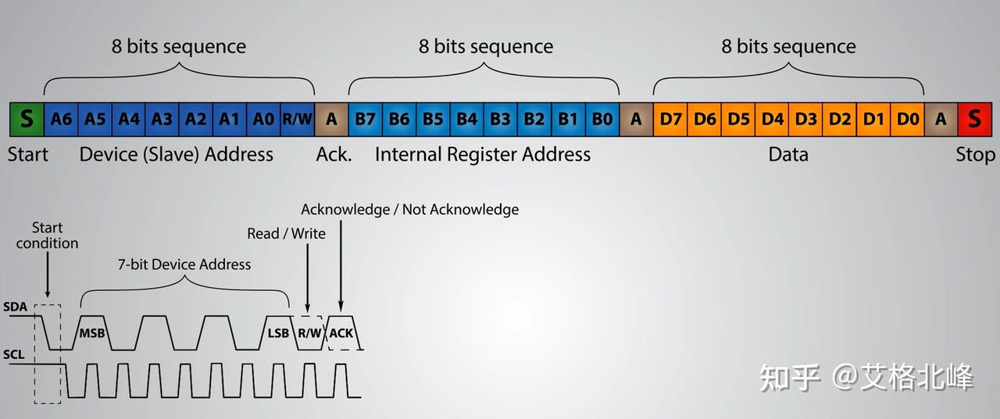
IIO
IIO不是物理总线，也不是虚拟总线，是一个子系统框架。底层硬件五花八门（不同的 SPI 设备、I2C 设备等），IIO 子系统为所有这些设备向上层（用户空间）提供了一个统一的、虚拟的访问接口，使用IIO后就会在/sys/bus/iio 下生成标准化的访问接口。
SPI
高速、全双工、同步的串行通信总线， SCK由master产生，CS/SS低电平有效
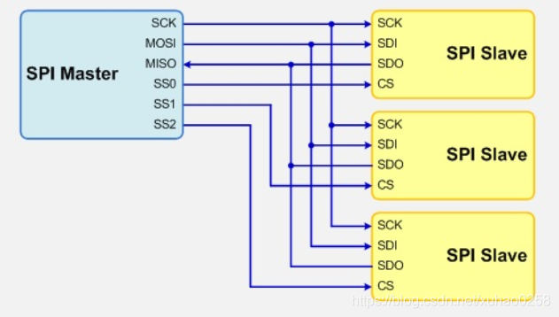
SPI总线传输共有4种模式，这4种模式分别由时钟极性(CPOL，Clock Polarity)和时钟相位(CPHA，Clock Phase)来定义，其中CPOL参数规定了SCK时钟信号空闲状态的电平，CPHA规定了数据是在SCK时钟的上升沿被采样还是下降沿被采样：（其中比较常用的模式是模式0和模式3）
模式0：CPOL= 0，CPHA=0。SCK空闲是为低电平，数据在SCK时钟的上升沿被采样，数据在SCK时钟的下降沿切换
模式1：CPOL= 0，CPHA=1。SCK空闲是为低电平，数据在SCK时钟的下降沿被采样，数据在SCK时钟的上升沿切换
模式2：CPOL= 1，CPHA=0。SCK空闲是为高电平，数据在SCK时钟的下降沿被采样，数据在SCK时钟的上升沿切换
模式3：CPOL= 1，CPHA=1。SCK空闲是为高电平，数据在SCK时钟的上升沿被采样，数据在SCK时钟的下降沿切换
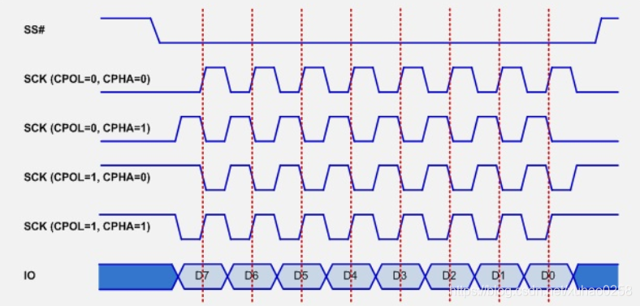
PWM
频率、周期、占空比，占空比=宽度/周期 * 100%
信号与同步 *
并发来源：
- 多核并行：不同 CPU 同时执行驱动代码。
- 进程上下文抢占：高优先级进程打断低优先级进程。
- 中断上下文：中断处理程序异步执行，可能抢占进程上下文代码。
- 阻塞与非阻塞 I/O：驱动需合理休眠与唤醒。
因此，驱动必须使用锁或同步机制保护临界区。
自旋锁（spinlock）
适用于临界区极短且不能睡眠的场合（如中断处理中的资源保护）。
忙等待，不引发调度，会占用 CPU。
中断上下文必须使用 spin_lock_irqsave() / spin_unlock_irqrestore() 避免死锁。
API：spinlock_t、spin_lock()、spin_unlock()。
互斥锁（mutex）
允许睡眠，适用于进程上下文中可能较长的临界区。
不能用于中断或原子上下文（因为会睡眠）。
同一时刻只有一个持有者，支持递归锁定（某些实现禁止）。
API：struct mutex、mutex_lock()、mutex_unlock()。
原子操作 使用较少
保证操作不可分割（如加减、位测试等）。
用于简单计数器或标志位。
API：atomic_t、atomic_inc()、atomic_dec_and_test() 等。
信号量（semaphore） 使用很少
计数信号量，允许指定数量并发访问（如多个读者）。
可以睡眠，常用于设备共享资源限制（如允许 5 个进程同时打开设备）。
传统内核接口：struct semaphore、down()、up()。
注意：新代码推荐用 mutex 替代二值信号量，用 completion 替代单次同步
常见死锁
1 同一线程重复获取同一自旋锁
避免方法：明确锁的层级关系，避免嵌套调用
2 循环，A等B，B等A
避免方法：
统一锁顺序：所有代码按固定顺序获取锁（如先 lock1，后 lock2）
使用单个锁：能用一个锁就不要用两个
分级锁：给锁分配等级，低等级不能在高等级持有下获取
3 中断上下文中获取进程上下文持有的锁
避免方法：任何被中断和进程共享的锁，进程侧必须用 _irqsave 版本
4 自旋锁内睡眠
避免方法：自旋锁临界区内绝对不调用可能睡眠的函数
5 mutex 在中断中使用
mutex_lock 可能睡眠，中断上下文不能睡眠
进程通信：管道、信号、消息队列、共享内存、信号量、socket
中断
task_struct
每个进程/线程在内核中都对应一个 task_struct 对象，包含了进程的所有属性：状态、调度信息、内存映射、文件描述符、信号处理、资源统计等。
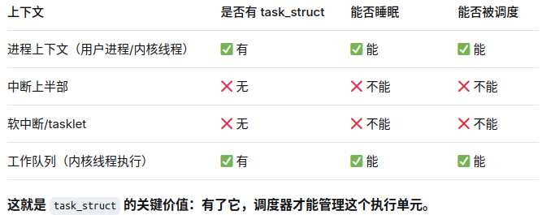
中断流程
精简版：
1 | 硬件外设触发中断 |
- CPSR: (Current Program Status Register) 当前程序状态寄存器
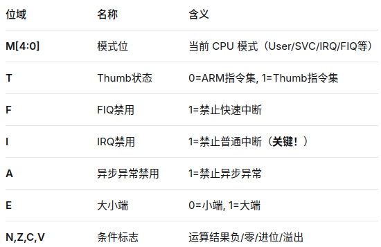
- SPSR: (Saved Program Status Register) 保存的程序状态寄存器
当发生异常（包括中断）时，硬件自动将 CPSR 复制保存到 SPSR
- LR (Link Register) 是 ARM 架构中的链接寄存器，对应物理寄存器
R14
将PC保存到LR，
1 | ┌─────────────────────────────────────────────────────────────────────────────────────┐ |
DMA环形缓冲区 *
硬件DMA控制器 –通常外设chip会集成
写指针由硬件维护，读指针由软件维护（部分DMA控制器在硬件层面支持环形缓冲区，不需要软件维护指针）
典型数据流：
- DMA从USART_DR寄存器持续搬运数据到硬件缓冲区
- 当DMA半满或全满时触发中断，或串口空闲（IDLE）时触发中断
- 中断服务程序将数据从硬件缓冲区拷贝到软件环形缓冲区
- 应用程序从软件环形缓冲区读取数据进行处理
linux驱动实现步骤
IPC
常用的核间通信方式有两种，其都基于mailbox:
- 基于RPMSG的核间通信解决方案，适合小块数据。
- 基于Share Memory核间通信解决方案，适合大块数据。
流程：
① 发送方将小数据拷贝到共享内存的环形缓冲区（VRING）。 ② 通过Mailbox发送VRING的ID或token，并触发接收方的中断通知接收方。 ③ 接收方从VRING中拷贝数据到自己的缓冲区。
特点：
- 两次数据拷贝，开销较大。 - 协议栈完善，有标准接口。 - 最大消息通常限制在512字节
典型场景：
控制命令、传感器状态、小消息通知。
1.1 VRING
由描述符表 + 可用环 + 已用环 组成，服务于一个单向数据流。可用环只能Core A写数据，已用环只能Core B写通知，已用环是为了降低mailbox中断的次数，减小系统开销。
一个VRING实现半双工，两个VRING可实现全双工。
通常一个主核与所有从核通信，从核之间不直接通信。
流程：
① 发送方将大数据写入共享内存的指定位置。 ② 通过Mailbox只传递该数据的内存指针（地址/长度）。 ③ 接收方收到指针后，直接从共享内存读取数据。
特点：
- 零拷贝，效率极高。 - 无消息大小限制。 - 需要自行管理内存同步和生命周期
典型场景：
图像、视频流、音频帧、大文件块。
NVIDIA为Jetson提供了IVC（Inter VM Communication）框架，核心原理：
IVC基于共享内存通道 + HSP门铃中断机制
1 | ┌─────────────────────────────────────────────────────────────┐ |
HSP（硬件同步原语）提供doorbell中断机制，源处理器发送消息后通过门铃信号通知目标处理器，实现低延迟的核间通信
2. 协议类
对于拥有30-40个以上自由度的全尺寸人形机器人，EtherCAT主干 + CANopen分支的混合架构是目前最主流的设计
- 中央控制器作为主站。
- 核心运动关节（如髋、膝、肩）通过EtherCAT网络以线型拓扑串联，确保高精度同步。
- 次要关节和传感器（如手腕、手指、底盘）则组成CANopen网络，以总线型拓扑接入，实现低成本、高可靠的扩展
- 中央控制器内部通过网关功能，实现两个网络间的数据互通与协同
2.1 CANopen
CAN 全称为Controller Area Network，即控制器局域网。CAN 是一种多主方式的串行通讯总线，特点：
A、较低的成本与极高的总线利用率；
B、 数据传输距离可长达10Km，传输速率可高达1Mbit/s；
C、可靠的错误处理和检错机制，发送的 信息 遭到破坏后可自动重发；
D、节点在错误严重的情况下具有自动退出总线的功能；
E、报文不包含源地址或目标地址仅用标志符来指示功能信息和优先级信息；
CAN总线网络主要挂在CAN_H和CAN_L，各个节点通过这两条线实现信号的串行差分传输，为了避免信号的反射和干扰，还需要在CAN_H和CAN_L之间接上120欧姆的终端电阻。为什么是120Ω，因为电缆的特性阻抗为120Ω，为了模拟无限远的传输线。
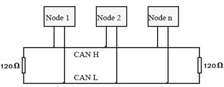
帧ID/COB-ID
CANopen通信中有1个主节点，其他全都是从节点
CANopen只使用了标准帧，因此数据帧ID只有11位。在CANopen中数据帧ID称为COB-ID
COB-ID值越小，报文优先级越高。
COB-ID分为两部分：
高4位是功能码：定义CANopen报文的服务类型，如NMT、SYNC、PDO、SDO等，它决定了报文的优先级。
低7位是节点ID（从机地址）。节点ID范围是1~127（0通常被保留用于广播，最多127个设备）
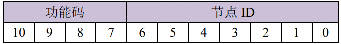
CANopen报文分类
- NMT：网络管理报文，作用是管理网络，切换节点的状态。一般由主站发送NMT网络管理报文。
- SDO：服务数据对象报文，作用是设置设备参数，或者是一些关键数据的传输。一般由主站发起SDO报文，从站应答SDO报文。从站也可以发起SDO，主站响应，比如关键数据的传输。
- PDO：过程数据对象报文，作用是传输一些设备的过程数据，比如传输温度，速度等等。主站和从站都会发送。
- EMCY：紧急报文，作用是传输设备的故障信息。主站和从站都会发送。
- SYNC：同步报文，作用是同步数据，用来同步从站的TPDO数据。一般由主站发送。比如从站的TPDO传输类型是在同步模式下，当从站收到设定次数的SYNC报文后，从站会发送TPDO。这个在后续的文章中详细阐述。
- NODE GUARDING：节点保护报文，作用是主站请求从站的状态，主站询问，从站应答。这种模式逐渐已被淘汰，因为太占CAN总线网络带宽。
- HeartBeat：心跳报文，作用是设备主动发送心跳，表示自己在线。主站和从站都可以发送。
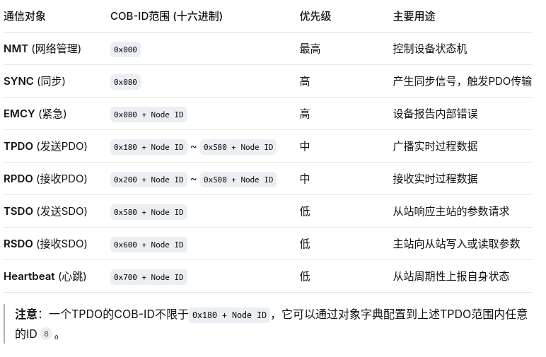
2.2 EtherCat *
EtherCAT作为一种工业以太网总线，充分利用了以太网的全双工特性 (物理层全双工，逻辑上串行通信)。使用主从通信模式，主站发送报文给从站，从站从中读取数据或将数据插入至从站。
主站可使用标准网卡实现
从站选用特定的EtherCAT从站控制器ESC(EtherCAT Slave Controller)或者FPGA实现，
主要完成通信和控制应用两部分功能，EtherCAT物理层选用标准以太网物理层器件。
2.2.1 EtherCAT网络协议栈
EtherCAT数据帧格式：
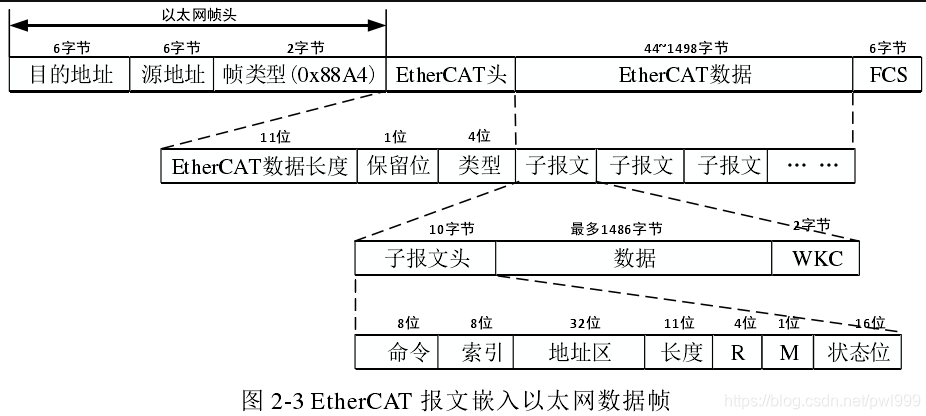
EtherCAT数据帧结构定义：
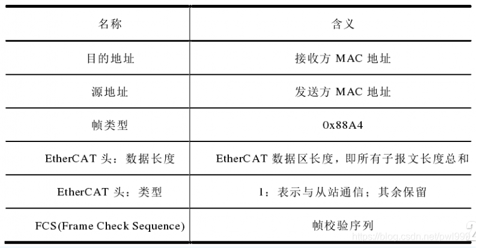
EtherCAT子报文结构定义：
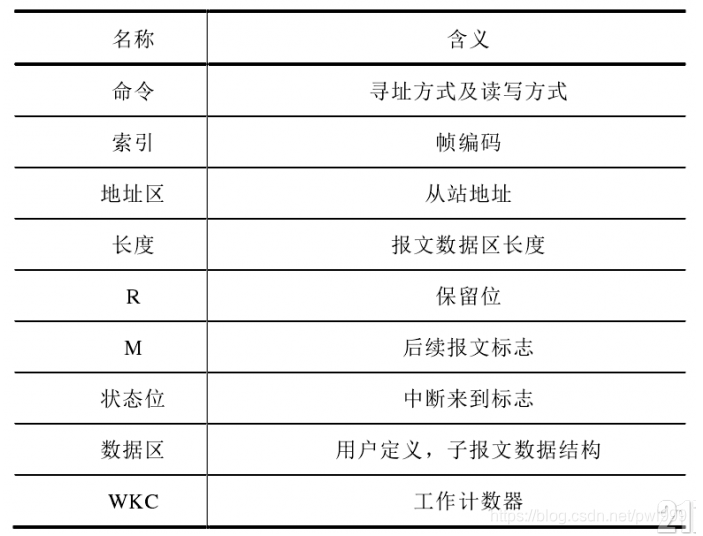
WKC字段：Working Counter，如果成功寻址了EtherCAT设备，并且成功执行了读操作，写操作或读/写操作，则工作计数器将递增。通过将工作计数器的预期值与所有设备通过后的实际值进行比较，主站可以检查EtherCAT数据报是否已成功处理。
2.2.2 EtherCAT设备寻址方式
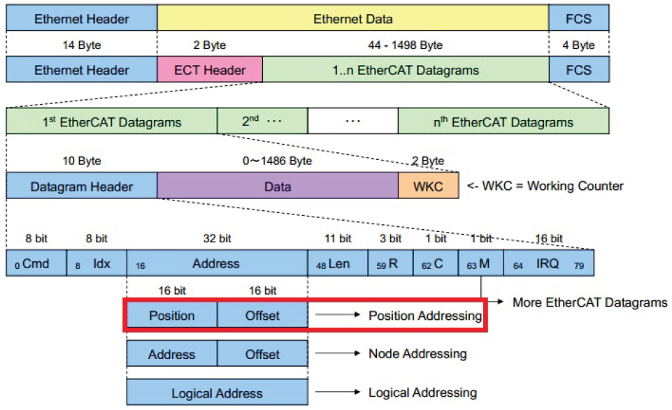
在EtherCAT的每个子报文中，有32位空间用于对EtherCAT设备进行寻址。寻址方式有四种，分别为：
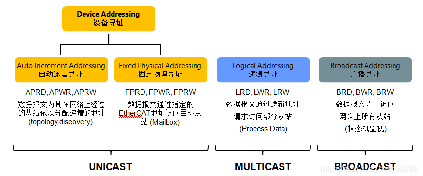
2.2.2.1 位置寻址 (Position Address / Auto Increment Address）
在报文头的32bit地址中，前16bit用于存放地址值，Offset用于存放ESC逻辑寄存器或者内存地址。报文每经过一个从站设备，其Position中的地址值加1。当一个从站接收到EtherCAT报文后，如果报文中的地址值为0，则该报文就是这个从站要要接收的报文。
位置寻址只应在启动EtherCAT系统时用于扫描现场总线，以后只能偶尔使用以检测新连接的从站。
2.2.2.2 节点寻址
报文头的32bit地址中，前16bit的Address用于存放站点地址值，Offset用于存放ESC逻辑寄存器或者内存地址，在每个从站中站点地址保存在寄存器 (0x0010) 中。（其实就是直接找目标从机的地址）
EtherCAT从设备可以有两个配置的站点地址：
1> 配置站点地址（Configured Station Address）：
由主站分配，存在主站内存中，只有主站可以分配，从站不能改，启动期间分配，与物理位置相关（通常按顺序分配 0, 1, 2…）
2> 配置站别名（Configured Station Alias）：
存储在从站的 SII EEPROM 中，从站自己可以修改（通过应用程序），预先设定，与物理位置无关，需主站”启用”后生效
2.2.2.3 逻辑寻址
首先需要了解FMMU (Fieldbus Memory Management Units)：
FMMU称为总线内存管理单元，它存在与从站芯片ESC中，负责对从站物理地址与主站逻辑地址进行翻译并建立映射关系。主站在总线启动过程中对FMMU进行配置，内容包括：
1 | • 逻辑地址的起始地址 |
一个从站可以有多个 FMMU，分别配置为读和写，对应不同的逻辑地址段。
CMD 只决定报文整体允许的操作（如 LRW 允许读写），具体哪个从站读、哪个写由 FMMU 的”方向”字段独立决定。
主站会为网络中的所有从站分配实际需要的数据大小，然后将这些零散的数据区域”拼接”在这4GB逻辑空间中的某几个连续段上。(发送报文时，32位地址空间全部用来放虚拟地址)
2.2.2.4 Broadcast寻址
用于所有从站的初始化和检查所有从站的状态
2.2.2.5 实际流程
- 启动阶段（位置寻址） 主站不知道网络上有哪些从站，先用物理位置（第1个、第2个…）给每个从站临时分配一个节点地址（0, 1, 2…），建立基础通信。
- 配置阶段（节点寻址） 主站用这个临时节点地址访问每个从站，读取它的 EEPROM，获得它的站别名（如果预先烧录了的话）。 同时，主站也可以给从站分配一个固定的配置站点地址。
- 运行阶段（节点寻址或逻辑寻址） 之后主站就可以用”站别名”来直接寻址这个从站，无论它在网络中处于第几个位置。 报文中的”节点地址”字段如果等于这个从站的”站别名”，该从站就会响应。
2.3分布式时钟(Distribute Clock)
ROS2 *
1. 节点 Node
定义：节点是 ROS 2 图中最小的计算单元，本质上是一个可执行程序
（对应到linux驱动，每个外设驱动，在ROS 2里就是一个节点） 一个节点既可以是发布者，也可以是订阅者。
当一个节点崩溃（段错误），其他节点不受影响
2. 话题 Topic
话题是两个节点之间的数据沟通的一种重要方式，也可为系统的不同组成部分之间（数据沟通）
topic交流可采用方式是一对一，一对多，多对一．
3. 服务
同一个服务（名称相同）有且只能由一个节点来进行提供
同一个服务可以被多个客户端调用
4. DDS
DDS (Data Distribution Service，数据分发服务) 是一个由 OMG (对象管理组织) 制定的工业级、去中心化的中间件标准。它的核心模型是”以数据为中心“的发布/订阅模式。是ROS2通信的心脏
Uboot
NVIDIA Jetson (Orin/Thor)平台提供了完整的 BSP，包含 U-Boot，以下是大概工作流程：
1 | 1. 环境搭建 |
1. 全系统启动链概览
- BootROM
代码位置：固化在芯片内部
主要功能：最基本的硬件初始化；识别启动模式；（可选）完成安全验证；加载下一阶段
特点：不可随意修改、体积小、逻辑精简
- SPL/Preloader（第二阶段引导）
代码位置：外部存储（eMMC、SD、SPI Flash 等）
主要功能：初始化更多外设（尤其是 DRAM）、加载主引导程序或更高级别引导程序
特点：功能相对 BootROM 更灵活，可对缺陷做升级或补丁
- 主引导程序（U-Boot、Barebox 等）
代码位置：外部存储
主要功能：完整的系统硬件初始化（网络、存储、显示等），加载操作系统内核
特点：体积更大，可与硬件工程师、软件开发人员深度定制
- 操作系统内核（Linux、RTOS 等）
代码位置：外部存储或网络（在部分场景）
主要功能：真正承载应用执行的平台，提供文件系统、进程管理、网络协议栈等
特点：更新与维护频率最高，体量最大
1 | ┌─────────────────────────────────────────────────────────────────┐ |
2. BootRom
BootROM 指的是固化在芯片内部且一般不可修改的启动代码。它通常存储在不可擦写或仅可一次性编程的物理介质上，如 Mask ROM 或 eFuse/ OTP （One-Time Programmable）区域。当系统上电或复位时，CPU 的程序计数器（PC）被硬件指向 BootROM 所在的地址，开始执行其中的指令。
下面以一个简要表格来说明 BootROM 在嵌入式系统中与其他引导阶段的对比：
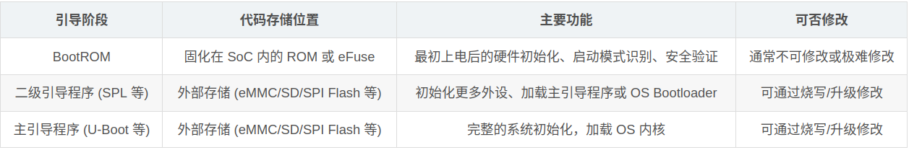
安全启动：在安全环境中生成一对公私钥，公钥烧录进 eFuse/OTP，私钥由厂商安全保管。每次量产或升级固件时，用私钥对镜像进行签名，BootROM 上电后用公钥校验
3. SPL (Secondary Program Loader)
SPL是 U-Boot 的精简版前置加载器，解决了一个核心矛盾：芯片内部 SRAM 太小，装不下完整的 U-Boot，但又需要初始化 DDR 才能运行完整 U-Boot。
1 | SPL 代码组成： |
CPU调度
https://blog.csdn.net/2301_77485708/article/details/156229867
完全公平调度器 (CFS)
核心设计思想是”完全公平”，每个进程获得的CPU时间与自身优先级成正比，优先级越高的进程，获得的CPU时间比例越大；在优先级相同的情况下，所有进程获得的CPU时间尽可能均等。
虚拟运行时间（vruntime）：
CFS为每个进程维护一个vruntime字段，其值通过进程的实际运行时间与优先级权重的比值计算得出，核心公式：
1 | vruntime+=实际运行时间×1024/进程权重 |
PREEMPT_RT实时补丁
核心目标是将内核中”不可抢占”的代码区域缩减到最小。
改变一：中断线程化
改变二：可抢占的”睡眠”自旋锁 spinlock可睡眠
改变三：优先级继承协议
当任务H因等待任务L持有的锁而被阻塞时，内核会**临时将任务L的优先级提升到与任务H相同**。
凭借高优先级，任务L能迅速抢占正在运行的M，快速执行完临界区并释放锁。
锁释放后，任务L的优先级恢复原状，而任务H获得锁继续执行。这彻底解决了无限期阻塞的问题
改变四：RCU的可抢占化与线程化
Driver
wifi
hx9023s
1 | hx9023s_probe(_ |
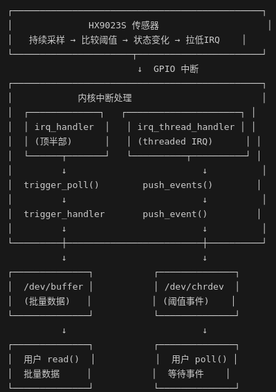
lt9611
LT9611 驱动的工作：接收 SoC 发来的 MIPI DSI 数据 → 转换为 HDMI TMDS 信号 → 输出给显示器。
热插拔检测让系统知道显示器连接了，然后 DRM 选择合适分辨率并调用 atomic_enable 完成整个链路配置
probe
1 | lt9611_probe() |
热插拔检测
1 | 用户插入 HDMI 线 |
DRM 框架探测（内核自动）
1 | drm_kms_helper_hotplug_event() |
真正开始显示（atomic_enable）
1 | DRM 框架调用 lt9611_bridge_atomic_enable() [line 685-731] |
DRM Bridge 回调
| 回调 | 触发时机 | 功能 |
|---|---|---|
| .attach | bridge 连接时 | 挂载下一个 bridge |
| .mode_valid | 模式验证 | 检查分辨率 (最大 3840x2160) |
| .detect | 检测连接状态 | 读取 0x825e 判断 HDMI 是否连接 |
| .get_edid | 获取 EDID | 通过 DDC 总线读取显示器 EDID |
| .hpd_enable | 使能 HPD | 启用热插拔中断 |
| .atomic_pre_enable | 原子使能前 | 从睡眠恢复时重新配置寄存器 |
| .atomic_enable | 原子使能 | 配置 MIPI 输入、PLL、HDMI 输出、video check |
| .atomic_disable | 原子禁用 | 关闭 HDMI 输出、断电 |
| .atomic_post_disable | 原子禁用后 | 进入睡眠模式 |
| .atomic_get_input_bus_fmts | 获取输入格式 | 返回 MEDIA_BUS_FMT_RGB888_1X24 |
IRQ 中断处理 (lt9611_irq_thread_handler)
| 中断标志 | 功能 |
|---|---|
| 0x80 (bit7) | HDMI 线断开 → 触发 hotplug 事件 |
| 0x40 (bit6) | HDMI 线连接 → 触发 hotplug 事件 |
| 0x01 (bit0) | 视频输入变化 → 记录日志、清除中断标志 |
HDMI Audio Codec 回调
| 回调 | 功能 |
|---|---|
| .hw_params | 设置音频采样率 (48k/96k) |
| .audio_startup | 启动音频通路 |
| .audio_shutdown | 关闭音频通路 |
| .get_dai_id | 获取 DAI ID (sound port) |
典型调用链
1 | 插上 HDMI 线 |
drm框架
DRM从模块上划分，可以简单分为3部分：
Libdrm 用户空间库
KMS （Kernel Mode Setting） *
- 更新画面：显示buffer的切换，多图层的合成方式，以及每个图层的显示位置。
- 设置显示参数：包括分辨率、刷新率、电源状态（休眠唤醒）等。
GEM
提供了一种抽象的显存管理方式（主要负责显示buffer的分配和释放），使用户空间应用程序可以更方便地管理显存，而不需要了解底层硬件的细节
KMS
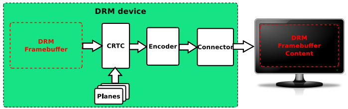
DRM Framebuffer
唯一一个与硬件无关的基本元素——帧缓存，用于存储屏幕上的每个像素点的颜色信息。
只用于描述显存信息（如 format、pitch、size 等），不负责显存的分配释放。
CRTC
电子束控制器，用于控制显卡输出信号，它会扫描Framebuffer上的内容，叠加上 Planes 的内容，传给 Encoder。
其承担的主要作用为：
配置适合显示器的显示模式、分辨率、刷新率等参数，并输出相应的的时序。
扫描framebuffer送到一个或多个显示器
更新framebuffer
在DRM里有多个显存，可以通过操作CRTC来控制要显示的那个显存。
Planes
其实就是图层
硬件图层，负责获取显存，再输出到CRTC里，可以看作是一个显示器的图层，每个 crtc 至少要有一个 plane。
通常会有多个 plane，每个 plane 可以分别设置自己的属性，从而实现多个图像内容的叠加。
Encoder
编码器，用于将 CRTC 输出的图像信号转换成一定格式（比如 DVID、VGA、YPbPr、CVBS、Mipi、eDP）的数字信号。每个 CRTC 可以有一个或多个 Encoder，它和 CRTC 之间的交互就是我们所说的 ModeSetting，其中包含了前面提供的色彩模式、还有时序（Timing）等。
Connector
物理连接器 (例如 HDMI, DisplayPort) 他会连接一个物理显示输出设备 (monitor, panel) 。
与当前物理连接的输出设备相关的信息（如连接状态，EDID数据，DPMS状态或支持的视频模式）也存储在 Connector 内。
VBLANK
软件和硬件的同步机制，RGB时序中的垂直消影区，软件通常使用硬件VSYNC来实现
property
原子操作的基础，任何你想设置的参数，都可以做成property，供用户空间使用，是DRM驱动中最灵活、最方便的Mode setting机制
USB
usb设备连接过程
https://blog.csdn.net/weiaipan1314/article/details/113530649
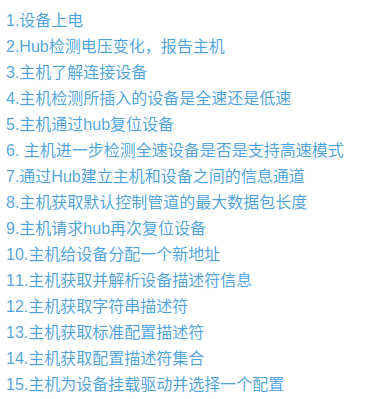
前期插入时配置：
- USB设备插入或上电
2.Hub检测电压变化，并报告主机
3.主机会发送一个 Get_Port_Status请求给hub以了解是插入还是拔出事件
4.主机检测所插入的设备是全速还是低速 –根据是D+还是D-被拉高来判断到底是什么设备（全速/低速）插入端口
5.主机通过hub复位usb设备 (使D+和D-全为低电平 )
- 主机进一步检测全速设备是否是支持高速模式
7.通过Hub建立主机和设备之间的信息通道
8.主机获取默认管道(地址0，端点0)的最大数据包长度
9.主机请求hub再次复位设备 –目的是使设备进入一个确定的状态。
10.主机给设备分配一个新地址 –之后就启用新地址与主机通信
11.主机获取并解析设备描述符信息并解析
设备描述符内信息包括端点0的最大包长度、设备所支持的配置个数、设备类型、VID、 PID、字符串索引等信息
12.主机获取字符串描述符 –如果有字符串描述符，主机会获取语言ID描述符和字符串描述符
13.主机获取标准配置描述符并解析
标准配置描述符内信息包括配置描述符集合长度、接口数、设备属性、设备所需电流
14.主机获取配置描述符集合并解析
配置描述符集合包括标准配置描述符、接口描述符、端点描述符，如果是HID设备还会包括HID描述符
15.主机为设备挂载驱动并选择一个配置 –至此，设备处于配置状态
描述符集描述了从机的所有功能细节：
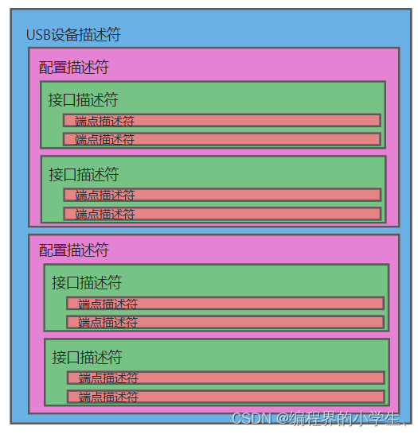
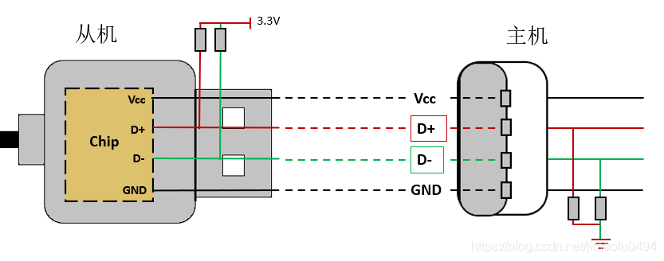
USB2.0 接口
USB3.0 引脚
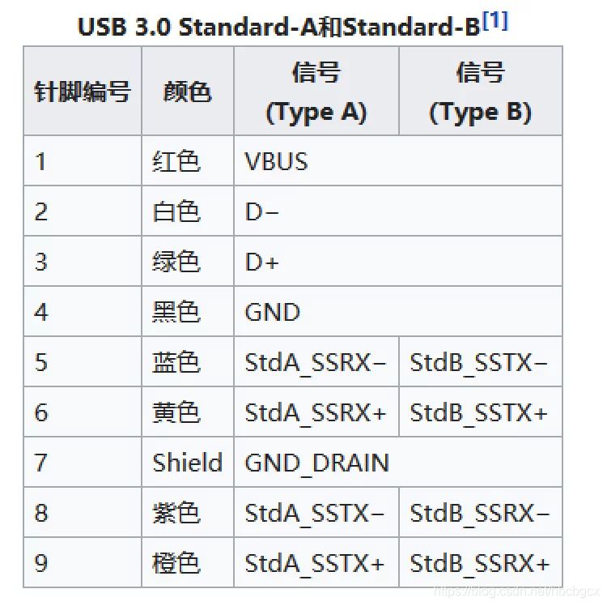
后5根是USB3.0的高速数据传输线，因为USB3.0传输的是全双工差分信号，所以需要两对数据线和一根信号地线。
USB驱动总体可分为三部分：USB总线驱动、USB主机控制器驱动、USB设备驱动。
调试
perf
Ftrace
Gdb
安全启动
固件加密
一个案例
根本原因：
- 该问题定位在driver 端代码问题， 驱动中有bench_date 检查时间戳， 长时间静止之后时间戳乱掉，导致那一块代码进入到异常状态， 最终G sensor 数据被丢弃， 系统没有接收到G sensor的数据，
修正 EC 时间戳是为了将 32 位溢出值还原为 64 位连续时间，而 suspend 超过 35.8 分钟后触发的是溢出判断边界条件，导致错误补偿，最终破坏了 batch_state 的时间连续性。
分析进展：
- 从当前的测试状况来看， 自动旋转按钮，Gsensor 功能， ufsc 配置状况看起来都是对的， 系统也是出于tablet mode 状态下， 但是还是无法旋转，
- 基本重启都能恢复， 有些机台放置一段时间也能恢复，从这个方面来看，Gsensor 本身没有问题， 应该是软件设置存在问题
3.从log看系统层当前已有的log也是打开了Gsensor的旋转并且没有值错误去阻碍了旋转功能，并且对没有打印的逻辑部分也去做了一些排查，例如是否测试过程中有应用强制申请了方向锁定，传感器角度是否没有达到旋转阈值等等，最终都被否决了，另外一些值由于debug的log默认是关闭的，已有log暂时没有定位到问题的rootcause
- 从log 看可能是系统没有拿到sensor数据， EC tool 的实时数据是正常
试验#1：刷新到最新的image 版本，TTL 15次, 依旧没有复现此问题
试验#2： 用fail 的机器做冷重启压测， TTL 4台机器3000圈
试验#3： 模拟工厂环境复现：
a. 用U 盘安装recovery image 再到OOBE_done ，TTL 60x 未复现
试验#4： 正常工厂流程 APRO 机器15台， 没有问题
试验#5： 三指安装image 模拟工厂流程进行压测_4台机器各10次没有复现
试验#6： 长时间suspend（使用工厂userdeubg image ）, 不联网停留在OOBE 解向导界面，复现到此问题， F/R 1/10
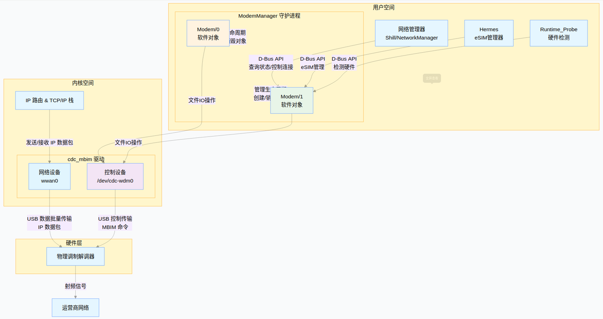
1 | 内核启动 |